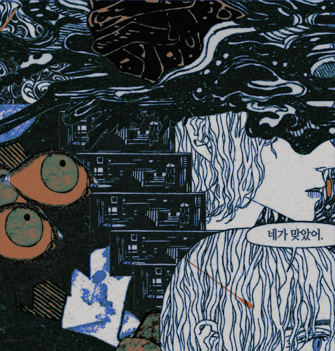

01


CHEONJAEJIBYUN
이안은 글에서 태어났다. 그는 그때 가족이 있었다. 내용상으로는 그가 죽었다
살아났다고 하였으나 믿지 않았다 - 그 전설 자체가 조금은 의심스러웠다 -.
부인과 아이가 있었다고 하지만 그 아이가 여자아이인지 남자아이인지는 얘기가
없었다. 무엇보다도, 그가 나의 소중한 마리와 결혼했으리라고는 미처 예상하지
못했다. 그의 이름은 그 글에서 '이안 셰브로 [Ian Chevreau]' 로
적혀있었다. 그는 내가 말을 걸 때면 차분하게 들어주는 편이다. 지금까지는 그가
언제나 옳았다. 그는 지금도 가족이 있다.
-
Ian was born from the text. He had a family back then. They said he once died and came back alive, but I didn't believe it - the lore was quite unbelievable - , and they also said he has a wife and a child, but they didn't tell me if the child is a girl or a boy. And most of all, I didn't expect him to marry the precious Marie I adore. His name was described as '이안 셰브로 [Ian Chevreau]' in the text. He listens to me calmly when I need to speak to him. And so far, he has always been right. He still has a family.
-
Ian was born from the text. He had a family back then. They said he once died and came back alive, but I didn't believe it - the lore was quite unbelievable - , and they also said he has a wife and a child, but they didn't tell me if the child is a girl or a boy. And most of all, I didn't expect him to marry the precious Marie I adore. His name was described as '이안 셰브로 [Ian Chevreau]' in the text. He listens to me calmly when I need to speak to him. And so far, he has always been right. He still has a family.
천재지변
Ian, 070926-070926, The House
Ian, 070926-070926, The House

ⓒ 2026 피플즈 PEOPLES All Rights Reserved.